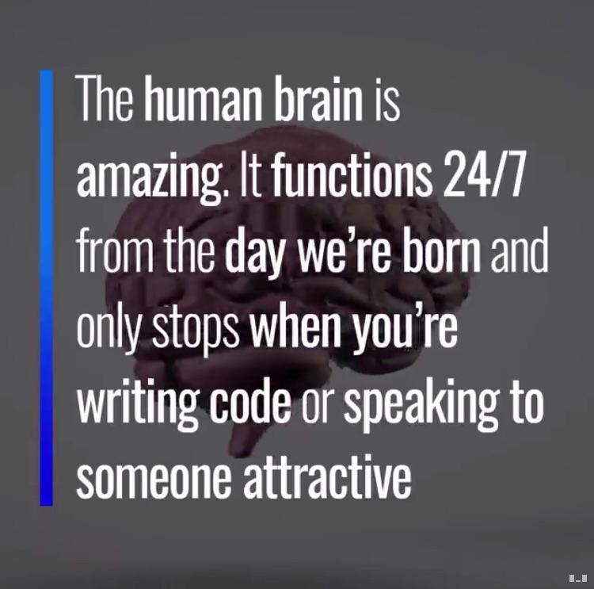

00. Link - Future JavaScript: what is still missing?
01. Link - How to Remove Array Duplicates in ES
02. Link - Enforcing Code Quality for Node.js
03. Link - EEG Motor Imagery Classification in Node.js with BCI.js
04. Link - How to make VR with the web, a new video series
05. Link - Always pass one argument to your JavaScript function
06. Link - An introduction to GraphQL: how it works and how to use it
